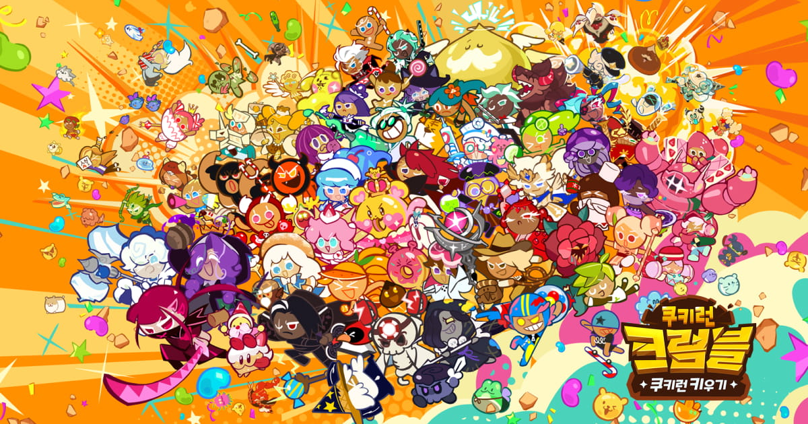
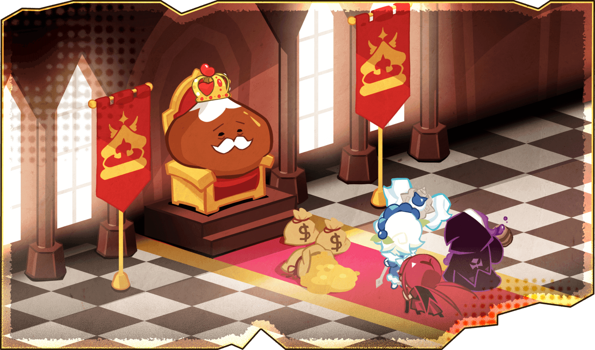
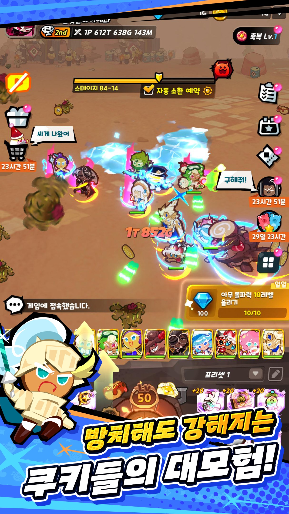
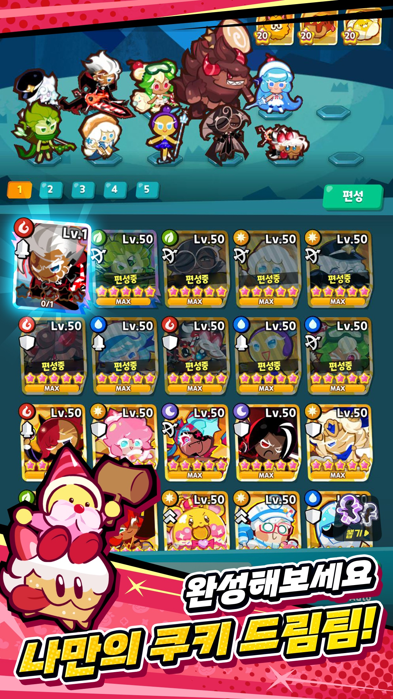
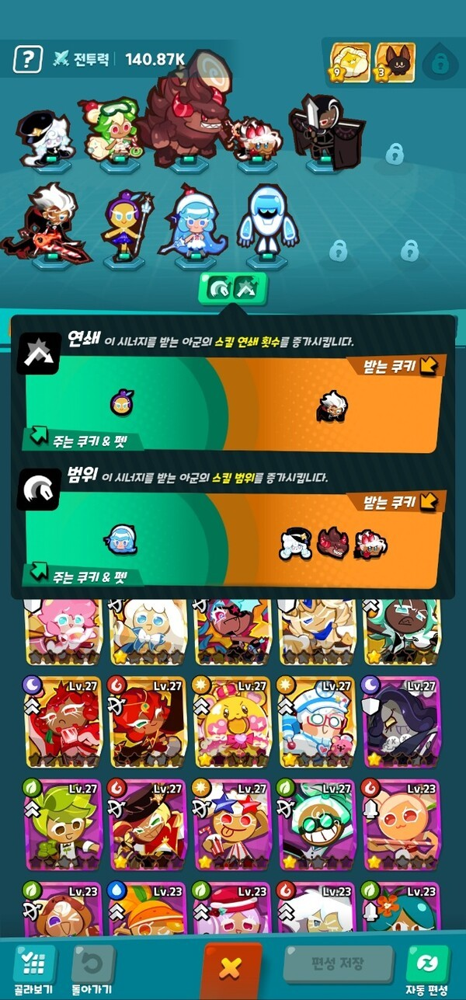

쿠키런크럼블 스텔라링크 뭔지 별조각 잠금 타이밍 계산기까지 정리
26년 7월 30일에 정식 출시한 쿠키런: 크럼블, 다들 한 번쯤은 이름 들어보셨을 텐데요. 공식 소개를 보니 장르가 방치형 쿠키 RPG라고 딱 정의돼 있더라고요. 저는 아직 직접 켜보진 못했고, 공식 헬프센터랑 팬 계산기 사이트를 쭉 훑어보면서 정리한 글이에요. 그중에서도 유독 헷갈린다는 얘기가 많은 게 바로 「스텔라 링크」인데요, 별조각을 어떻게 굴려야 손해를 안 보는지 오늘 이거 하나만 제대로 짚어드릴게요.

공식 사이트에 걸린 쿠키런: 크럼블 대표 이미지예요.
이미지 출처: 쿠키런: 크럼블 공식 사이트 · 네이버 본문엔 받아서 재업로드 권장
스텔라 링크, 대체 뭐 하는 시스템인가요
스텔라 링크는 정해진 별조각 배치에 따라 넓이랑 보너스가 자동으로 계산되는 성장 시스템인데요. 공식 한글 표기는 그대로 「스텔라 링크」(Stellar Link)고, 여기 쓰이는 재화 이름은 「별조각」(Star Shard)이더라고요. 공식 헬프센터 원문을 보면 "링크의 넓이 및 보너스는 정해진 별조각 배치에 따라 자동으로 계산되며, 별도의 확률 추첨을 거치지 않습니다"라고 딱 못 박아뒀답니다 — 이게 이 시스템을 이해하는 핵심 문장이거든요. 즉 뽑기는 '어디에 배치되느냐'에만 걸리고, 넓이나 보너스 자체는 그 배치를 보고 계산만 하는 거지 따로 확률을 또 굴리는 게 아니라는 뜻이죠.
효과 쪽은 편성 중인 쿠키들의 공격력·방어력·생명력이 링크 넓이만큼 증폭되고 성좌끼리 누적된다고 팬 사이트가 설명하는데🔍 게임 내 수치 확인, 정확한 %는 공식이 밝힌 적이 없어 수치는 안 넣었어요. 해금 레벨·메뉴 위치도 인게임에서 직접 확인하시는 게 정확해요.

쿠키런 왕국 배경의 공식 스토리컷이에요(스텔라 링크 화면은 아니고, 세계관 소개용 이미지예요).
이미지 출처: 쿠키런: 크럼블 공식 사이트 · 네이버 본문엔 받아서 재업로드 권장
자리는 12칸, 뽑히는 건 '어디에 어떤 순서로'
스텔라 링크 판은 총 12칸이고, 그 안에서 별조각이 놓일 자리랑 잇는 순서를 통째로 무작위 추첨해요. 공식 원문 그대로 옮기면 "별조각의 위치와 잇는 순서(배치)를 무작위로 추첨하며, 모든 배치는 1/전체 경우의 수로 동일한 추첨 확률을 가집니다"라고 돼 있어요. 자리랑 순서가 같이 뽑히고, 그 확률이 완전 균등하다는 것 둘 다 공식이 확인해준 셈이죠.
활성 별조각 개수가 늘수록 경우의 수가 어마어마하게 뛰는데, 공식이 공개한 확률표를 일부만 발췌하면 이래요(공식이 '12칸'이라 쓴 적은 없고, 확률표 숫자에서 역산되는 자리 수예요).
| 활성 별조각 수 | 배치 경우의 수 | 개별 배치 확률 |
|---|---|---|
| 3개 | 1,320 | 약 0.0758% |
| 6개 | 665,280 | 약 0.000150% |
| 9개 | 79,833,600 | 약 0.00000125% |
| 12개 | 479,001,600 | 약 0.000000209% |
출처: 공식 헬프센터 「스텔라 링크 확률 정보 안내」
9개만 돼도 확률이 억 분의 일 수준으로 뚝 떨어지죠. 참고로 공식 확률표는 3개부터 12개까지만 나와 있으니, '9~12개'라는 말을 들으셨다면 그건 표의 범위 얘기지 특정 구간을 콕 집은 게 아니라는 것만 알아두세요.

앱스토어에 등록된 쿠키런: 크럼블 스테이지 진행 화면이에요.
이미지 출처: 앱스토어 등록 스크린샷 · 네이버 본문엔 받아서 재업로드 권장
잠금, 여기서 손익이 갈려요
별조각을 잠그면 그 조각은 자리랑 순서가 그대로 고정되고, 잠기지 않은 나머지만 다시 균등하게 추첨되는데요. 공식 원문도 "별조각을 잠그면 해당 별조각은 고정되며, 잠기지 않은 나머지 별조각을 대상으로 모든 가능한 배치가 균등한 확률로 추첨됩니다"라고 확인해주고 있네요.
잠금은 최대 6개까지 걸 수 있고🔍 공식 문서엔 상한 표기 없음, 재설정 SP 비용은 이렇게 나오는데요.
| 잠금 개수 | 재설정 비용(SP) |
|---|---|
| 0개 | 10 |
| 1개 | 10 |
| 2개 | 30 |
| 3개 | 60 |
| 4개 | 100 |
| 5개 | 150 |
| 6개 | 220 |
★팬 계산기가 정리한 기준(공식 발표 아님)
여기서 이 글 제일 실용적인 포인트를 짚을게요. 잠금 0개랑 1개는 재설정 비용이 똑같이 10 SP인데, 경우의 수는 1개만 잠가도 훨씬 줄어들어요. 잠글 만한 조각이 있는데 맨손으로 돌리는 건 언제나 손해라는 얘기죠. 재설정은 배치를 덮어써 버리는 거라 되돌리기 기능도 없네요.

쿠키 팀을 편성하는 로스터 화면이에요.
이미지 출처: 앱스토어 등록 스크린샷 · 네이버 본문엔 받아서 재업로드 권장
그래서 언제 돌리고 언제 멈추나요
평균 아래면 돌리고 평균 넘으면 잠그고 기대값이 꺾이면 멈추면 돼요. 팬 계산기가 권장하는 루틴인데요, 순서로 보면 이래요.
- 별조각 개수랑 현재 배치를 그대로 입력해 기준선을 잡아요 — 조각 늘면 개수부터 갱신해야 하거든요.
- 면적이 무작위 평균보다 아래면 맨손으로 돌려요. 잃을 게 없고 재설정 10 SP는 거의 항상 이득이고요.
- 평균 넘긴 순간부턴 잠금이 필수인데요, 맨손 재설정은 마이너스 기댓값이라 100 SP당 기대 이득 제일 큰 잠금 개수를 골라요.
- 판정이 '멈추라'로 바뀌면 멈춰요 — 잠금 6개를 걸어도 기대 면적이 지금보다 낮으면 남은 포인트는 다음 성좌 개방에 쓰는 게 낫거든요(이전 성좌 보너스는 남으니까요).
개수가 늘수록 무조건 어려워지는 건 아니에요. 12를 나누어떨어뜨리는 3·4·6·12개는 자리가 등간격이라 최적 배치가 더 드물어서, 최적 배치가 걸릴 확률로 치면 6개(1/27,720)가 7개(1/7,920)보다 더 어렵다는데요.
면적은 왜 가운데 구멍까지 세나요
성좌도 바깥에서 출발해 링크 선을 한 번도 넘지 않고 닿을 수 있으면 '밖', 닿을 수 없으면 '안'이라서 그래요. 그래서 링크가 교차해 생긴 가운데 빈 공간도 면적에 포함되네요. 정12각형 전체가 100%라, 별조각이 12개보다 적으면 아무리 잘 뽑아도 100%엔 못 닿아요.
다만 이 면적 정의는 전부 팬 계산기가 만든 거예요. 공식은 "넓이가 자동 계산된다"까지만 밝혔지 계산식은 공개한 적이 없거든요.

팀 시너지를 보여주는 시너지 UI 예시예요.
이미지 출처: 경향게임스 · 네이버 본문엔 받아서 재업로드 권장
미리 돌려볼 수 있는 사이트가 있어요
크럼블헬퍼(crumblehelper.com/stellar), 2026년 8월 1일 기준 직접 확인했어요. 이건 개인이 만든 비공식 팬 사이트예요. "본 사이트는 개인이 만든 비공식 팬 사이트이며, 주식회사 데브시스터즈와 제휴·후원·승인 관계가 없습니다", "계산 결과는 관측과 시뮬레이션에 기반한 추정치이며 실제 게임 내 수치와 다를 수 있습니다"라고 직접 밝혀뒀어요.
화면은 이렇게 나뉘어 있어요.
| 구역 | 할 수 있는 것 |
|---|---|
| 입력 | 배치 입력 · 남은 조각 자동 배치 · 되돌리기 · 무작위 · 최적 배치 |
| 결과 | 별자리 면적 · 이 개수의 상한 · 재설정 비용(SP) |
| 잠금 (0/6) | 노드 클릭으로 걸거나 해제 · 링크 재설정 · 최적 잠금 찾기 |
| 아래쪽 | 결과 면적 분포 · 잠금 개수별 성과 · 별조각 수별 상한과 평균 |
2026.08.01 확인 화면 · 분포 그래프는 재설정 4,000회 시뮬레이션 결과예요
이 중에 제일 요긴한 건 맨 아래 「별조각 수별 상한과 평균」이에요. 내 조각 개수에서 무작위 평균이 몇 %인지 여기서 봐야, 앞에서 말한 '평균 아래면 돌리고 평균 넘으면 잠근다'를 실제로 판단할 수 있거든요.
중요한 건 사이트가 스스로 "검증이 필요한 가정"이라 밝힌 부분들이에요.
- 면적 → 증폭 비례식을 선형(면적 × 0.2)으로 가정.
- 12칸이 정12각형 균등 배치라는 가정.
- 표시값은 격자 계산이라 ±0.5%p 오차 가능.
- 게임 배치 4건(34/43/48/56%)과 대조해 평균 오차 0.5%p로 일치 — 단 표본이 4건뿐이에요.
- 조각이 늘 때 배치를 어떻게 이어받는지는 아직 미확인.
자주 묻는 질문
Q. 잠금을 걸면 그 조각 확률이 좋아지나요?
아니요, 자리·순서가 고정될 뿐이고 나머지는 여전히 균등하게 뽑히는데요, 좋아지는 건 확률이 아니라 경우의 수랍니다.
Q. 계산기 사이트 숫자를 그대로 믿어도 되나요?
방향은 믿어도 되지만 숫자 자체는 참고치로만 보시는 게 좋아요.
Q. 별조각을 더 얻으면 무조건 이득인가요?
상한은 올라가지만, 새 조각이 링크를 가로지르면 그 순간 면적이 내려갈 수 있어요.
쿠키런 크럼블 스텔라 링크 정리
결국 이 글에서 붙잡을 건 세 가지예요 — 배치가 정해지면 넓이·보너스는 자동 계산된다는 것, 배치는 자리+순서가 함께 균등 추첨된다는 것, 잠근 조각은 고정되고 나머지만 다시 균등 추첨된다는 것. 여기까지가 확정 사실이네요.
반대로 잠금 상한 6개, SP 비용표, 면적 계산 방식, 재설정 루틴, 그리고 이 글의 12칸까지 — 전부 팬 계산기의 관측·시뮬레이션·역산 추정치인데요, 공식이 확인해준 건 위 세 가지뿐이란 대비만 기억해두세요. 실전엔 도움 되니, 잠글 조각 있으면 맨손으로 돌리지 말고 크럼블헬퍼로 감 잡아보시는 걸 추천드려요.
✔ 쿠키런 크럼블 같이 보기 좋은 내용
· 쿠키런 크럼블 등급표 총정리! 초반엔 뭐부터 키워야 할까 (발행 시 링크 연결)
· 쿠키런 크럼블 7월 30일 출시 확정! 사전등록 180만 보상 총정리 (발행 시 링크 연결)
· 쿠키런 크럼블 사전예약 시작! 방치형 쿠키런 첫인상 정리 (발행 시 링크 연결)
참고한 곳
· 공식 헬프센터 「스텔라 링크 확률 정보 안내」
· 쿠키런: 크럼블 공식 사이트